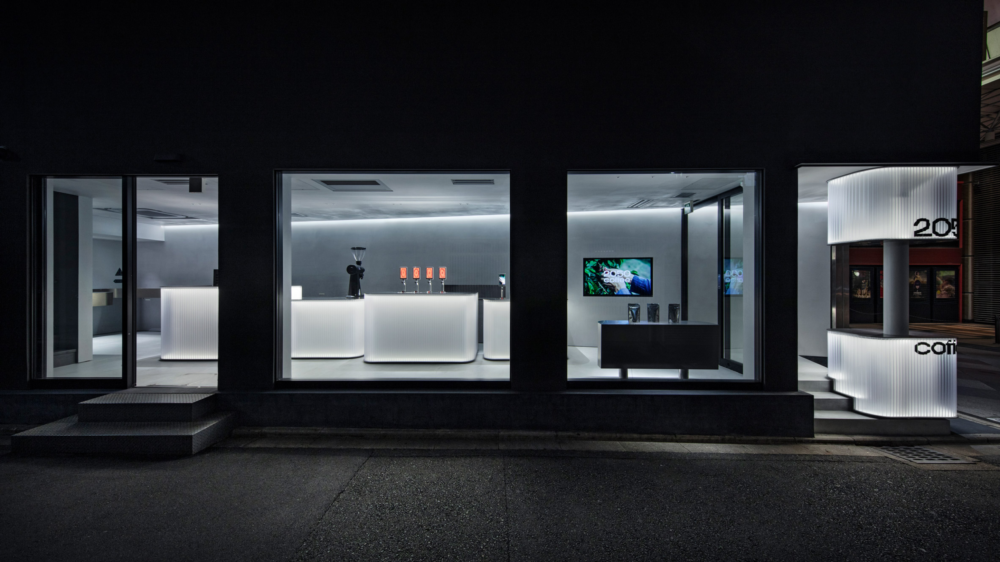
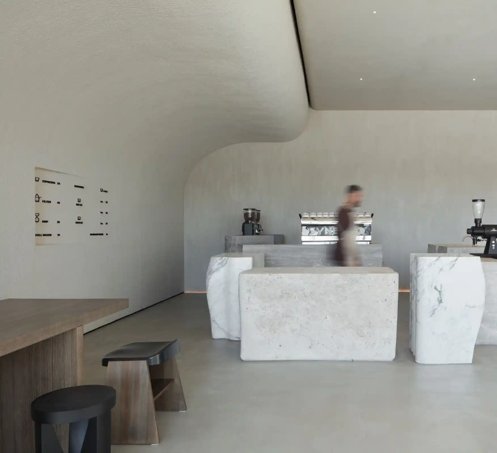

I keep a running Naver bookmark folder of cafes — some I’ve been to, many I want to. This page reads from that folder and turns it into something you can actually browse: search, filter, group by district, see every spot on a map.
The route planner uses a small TSP solver to take 3–7 cafes you’ve picked and order them by shortest straight-line path. Useful when I have a free afternoon and want to chain two or three in one walk.
Your shared bookmark folder is plotted with custom markers. Click any marker or list card to sync map focus.
Open shared list →